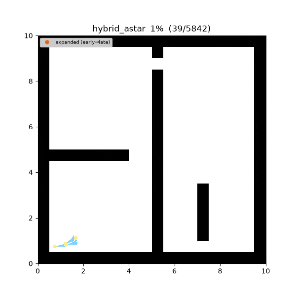
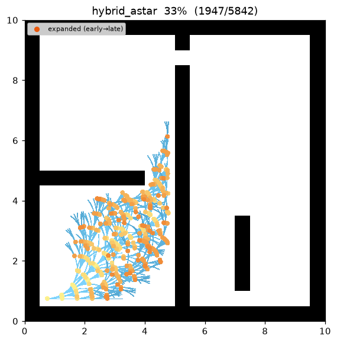
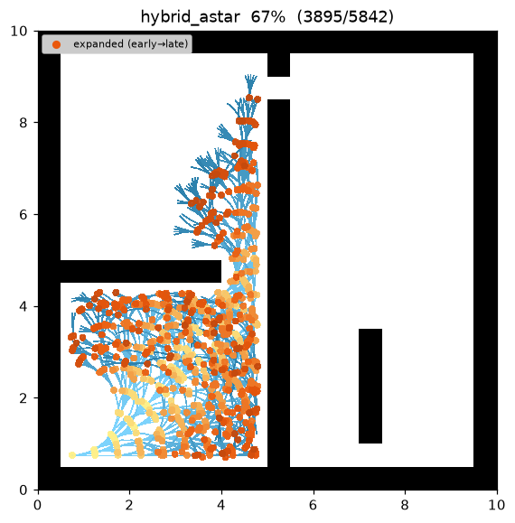
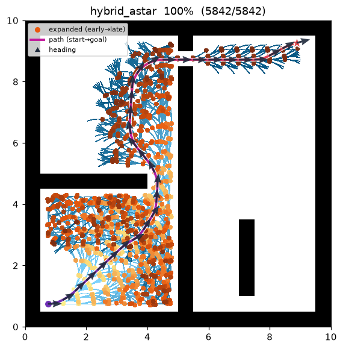
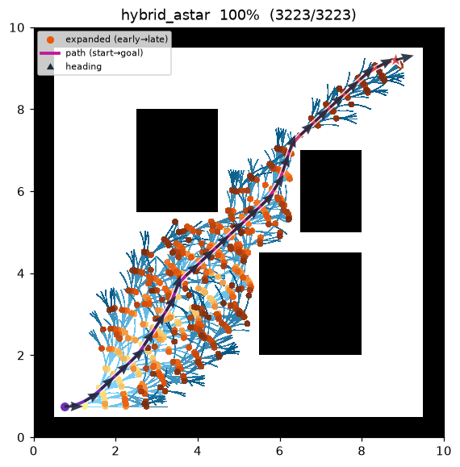

Hybrid A* (kinodynamic SE(2))¶
| 항목 | 설명 |
|---|---|
| 분류 | kinodynamic 탐색 (연속 SE(2) pose) |
| 요구 capability | SE2CollisionSpace (is_collision(footprint, pose)) |
| 완전성 | resolution-complete (유한 bin 이산화) |
| 최적성 | resolution-suboptimal — feasible 하나 엄밀 최적은 아님 (Dolgov et al. 2008) |
| 복잡도 | 이산 bin 위 A* × 노드당 상수곡률 모션 프리미티브 |
| 원 논문 | Dolgov, Thrun, Montemerlo & Diebel (2008) 1 |
배경¶
A*2 는 격자 위에서 셀 단위로만 움직이므로 차량의 방향(heading)과 회전반경을 무시한다 — 자동차는 90° 계단 경로를 따라갈 수 없다. Hybrid A*1 는 대신 연속 SE(2) pose 공간 (x, y, θ) 을 탐색한다. 노드를 확장할 때 실제로 주행 가능한 상수곡률 모션 프리미티브(호)를 시뮬레이션하므로 모든 간선이 kinematically feasible 하다. 연속 탐색을 유한하게 유지하기 위해 이산화된 (x, y, θ) bin 을 키로 하는 closed set 을 둔다: 같은 bin 의 두 pose 는 같은 탐색 노드로 취급하되, 경로 자체는 연속으로 남는다.
이름이 "hybrid" 인 이유는 상태는 연속이고 방문 집합은 이산이기 때문이다.
동작 방식¶
maze01 탐색. frontier 는 bin 을 따라 자라지만 최종 경로는 매끄러운 곡선이고, heading 화살표가 차량이
회전반경 이내로 돌며 gap 을 통과하는 모습을 보여준다.

탐색 중간 과정 (좌 → 우: 초반 / 중반 / 최종 경로):
 |
 |
 |
open01 최종 결과:

HYBRID-A*(start, goal):
g[bin(start)] ← 0 ; pose_of[bin(start)] ← start
open ← f = g + h 우선순위 큐 # h = Euclidean 직선 거리
while open 비어있지 않음:
b ← open.pop_min() ; 이미 settle 됐으면 continue ; settle b
p ← pose_of[b] # 그 bin 의 최선 연속 pose
if reached_goal(p): return reconstruct(came_from)
for (κ, L, reverse) in motion_primitives(): # 전진 fan, 그다음 후진 fan
subs ← sample_arc(p, κ, L) # 호를 따라 dense sub-pose
if any is_collision(footprint, s) for s in subs: continue
child ← subs[-1] ; b2 ← bin(child)
cand ← g[b] + arc_cost(L, κ, reverse)
if cand < g[b2]:
g[b2] ← cand ; pose_of[b2] ← child ; came_from[b2] ← (b, subs)
open.push(b2, cand + h(child))
return failure
모션 프리미티브 — 차량 모델은 planner 에 있다¶
맵은 footprint 충돌만 답하고, 차량 모델은 전부 planner 에 있으며 config 파라미터로 구동된다. 최대 곡률
κ_max = 1 / min_turn_radius 에 대해 planner 는 [−κ_max, +κ_max] 를 균등 분할한 num_steering 개
곡률을 부채꼴로 뻗고(홀수면 κ = 0 직진 포함), 각각을 arc_step 만큼 전진 — allow_reverse 면 후진도 —
시킨다. 프리미티브는 상수곡률 호를 적분한다 (θ 는 additive, heading 에 trig 불필요):
θ' = θ + κ·L
|κ| ≈ 0: x' = x + L·cosθ ; y' = y + L·sinθ
그 외: x' = x + (sinθ' − sinθ)/κ ; y' = y − (cosθ' − cosθ)/κ
cost = |L|·(reverse ? reverse_penalty : 1) + steer_penalty·|κ|·|L|
Footprint 충돌 — 내접원(inscribed disc), 맵에서 판정¶
로봇은 반경 footprint_radius 의 내접원이다. 원은 방향 불변이라 충돌은 오직 (x, y) 에만 의존하므로
swept-polygon trig 이 없다. 맵은 원을 셀에 rasterize 하여 occupied 또는 out-of-bounds 셀이 원과
겹치면 충돌로 보고한다 — sqrt·trig 없는 정확한 disc-vs-cell 제곱거리 판정. 각 호는 간격 ≤
footprint_radius 로 sub-sample 된다(n_sub = max(2, ⌈arc_step / footprint_radius⌉)). 그래서 연속
footprint 원들이 겹치고 얇은 벽이 두 충돌 검사 사이로 빠져나갈 수 없다(터널링 방지). 같은 sub-pose 들이
충돌 검사와 시각화에 함께 쓰인다.
이산화 bin — planner 내부, grid 인덱스 누출 없음¶
closed set 은 planner 가 world 좌표와 자신의 xy_resolution / theta_bins 만으로 계산한 bin 을 키로
쓴다 — map.world_to_cell 을 절대 호출하지 않는다(맵의 grid 프레임이 planner 로 새는 것을 막는다):
bin(p) = (⌊x / xy_resolution⌋, ⌊y / xy_resolution⌋, ⌊wrap(θ) / (2π / theta_bins)⌋ mod theta_bins)
휴리스틱 — Euclidean 단일¶
원 논문은 휴리스틱을 두 개 쌓는다(장애물을 무시하는 non-holonomic Reeds-Shepp/Dubins 거리, 차량을 무시하는
holonomic grid-Dijkstra 거리). 본 스터디는 의도적으로 admissible Euclidean 직선 휴리스틱 단일
h = √(Δx² + Δy²) 만 구현한다(hypot 아님, sqrt): Reeds-Shepp shot 은 atan2/acos 와 분기 로직이
많아 결정성에 부담이고, grid-Dijkstra 는 맵의 neighbors() 가 필요하지만 standalone SE2CollisionSpace
는 이를 의도적으로 노출하지 않는다. 둘 다 향후 확장 옵션으로만 남긴다. goal 로의 analytic (Reeds-Shepp)
expansion 도 없으며, 목표는 위치 + heading 허용오차 이내로 도달한다.
재현:
python python/demos/demo_hybrid_astar.py \
--map maps/grid/maze01.yaml --scenario maps/scenarios/maze01_s1.yaml \
--params configs/global_planning/hybrid_astar.yaml --trace out/hybrid_astar.jsonl
python tools/viz/replay.py out/hybrid_astar.jsonl --gif out/hybrid_astar.gif --snapshots out/hy_snaps/
성질¶
- 완전성: resolution-complete — 선택한 bin 해상도에서 해가 존재하면 찾는다.
- 최적성: resolution-suboptimal. 이산화된 closed set 과 유한 프리미티브 집합 때문에 반환 경로는
feasible·저비용이나 엄밀 최적은 아니다(Dolgov et al. 2008). analytic expansion 이 없어 최종 heading 은
goal_heading_tolerance이내로만 맞춘다. - feasibility: 모든 간선이
min_turn_radius이내 상수곡률 호이므로 전체 경로가 주행 가능하다 — 각 스텝은 프리미티브 하나 이내이고 각 heading 변화는 곡률 한계를 지킨다. - 복잡도: (x, y, θ) bin 위 A*, 노드당
num_steering(후진 시 ×2) 분기.
모션 모델 유도와 성질¶
상수곡률 호의 적분. 각 프리미티브는 단위 속도 unicycle 모델을 호 길이 \(s\) 로 적분한 것이다:
\(\theta(s)=\theta+\kappa s\) 이므로 \(s\in[0,L]\) 에서 적분하면 (\(\theta'=\theta+\kappa L\))
\(\kappa\to0\) 극한은 \(\dfrac{\sin(\theta+\kappa L)-\sin\theta}{\kappa}\to L\cos\theta\) (그리고 \(y\) 항은 \(L\sin\theta\)) 로, 코드의 직진 분기 \(x'=x+L\cos\theta,\ y'=y+L\sin\theta\) 와 정확히 일치한다 — \(\kappa\approx0\) 을 따로 두는 것은 0 나눗셈 회피일 뿐 별개 모델이 아니다.
feasibility (곡률 한계). 반경 \(R\) 원호의 곡률은 \(\kappa=1/R\) 이다. planner 가 곡률을
\([-\kappa_\max,\kappa_\max],\ \kappa_\max=1/R_\min\) 로 제한하므로 모든 간선의 회전반경은
\(\ge R_\min=\) min_turn_radius. 경로가 이런 호들의 연결이라 전체가 차량 회전 능력 안에서 주행
가능하다 — 격자 A* 와의 본질적 차이(간선이 셀 이웃이 아니라 주행 가능한 호)가 여기서 나온다.
heuristic admissibility. \(h=\lVert(\Delta x,\Delta y)\rVert_2\) 는 위치 직선거리다. 실제 남은 비용은 (i) 호 길이가 두 끝점의 현(직선)보다 짧을 수 없고, (ii) 간선 비용 \(|L|\cdot(\text{reverse}?\,p_r:1)+p_s|\kappa||L|\ge|L|\) 로 페널티가 비용을 늘리기만 하므로 \(h\le h^\ast\) — admissible. 다만 이 \(h\) 는 heading·비홀로노믹 제약을 무시한 약한 하한이라, Reeds–Shepp 하한을 쓰는 원 논문보다 확장 노드가 많다(구현 단순성과의 맞바꿈).
터널링 방지 sub-sampling. 각 호는 sub-pose 간격이 \(\le r=\) footprint_radius 가 되도록
\(n_\text{sub}=\max(2,\lceil L/r\rceil)\) 로 분할한다. 반경 \(r\) 인 두 footprint 원의 중심 거리
\(d\le r<2r\) 이면 두 원은 반드시 겹치므로, 검사한 원들의 합집합은 틈 없는 관(tube) 을 이룬다.
따라서 두 검사 사이로 빠져나갈 두께의 벽이 존재할 수 없다. 충돌 자체는 원–셀 제곱거리 판정(중심에서
셀의 최근접점까지 거리\(^2\le r^2\))이라 sqrt·trig 없이 정확하다.
resolution-completeness 와 준최적성. 연속 상태를 유한하게 만드는 두 이산화가 곧 두 준최적 원인이다:
(1) \((x,y,\theta)\) bin closed set — 같은 bin 의 서로 다른 pose 를 한 노드로 합쳐, 이미 settle 된
bin 때문에 더 나은 연속 pose 가 버려질 수 있다. (2) 유한 프리미티브 집합
\(\kappa\in\{-\kappa_\max,\dots,\kappa_\max\}\) (num_steering 개) — 최적 곡률이 그 사이 값이면 근사만
된다. 그래서 반환 경로는 feasible·저비용이되 엄밀 최적은 아니며(Dolgov et al. 2008), bin 을 촘촘히·
프리미티브를 많이 둘수록 최적에 근접한다(resolution-complete). analytic(Reeds–Shepp) goal expansion 이
없어 최종 heading 은 goal_heading_tolerance 이내로만 맞춘다.
파라미터¶
| 이름 | 타입 | 기본 | 범위 | 설명 |
|---|---|---|---|---|
min_turn_radius |
float | 1.0 | [0.1, 50.0] | 최소 회전반경 (m). κ_max = 1 / min_turn_radius |
arc_step |
float | 0.5 | [0.05, 20.0] | 모션 프리미티브 1개 호 길이 (m); g 비용 단위 증분 |
num_steering |
int | 5 | [2, 51] | [−κ_max, +κ_max] 이산 곡률 수; 홀수면 직진 포함 |
theta_bins |
int | 72 | [4, 360] | closed-set bin 의 heading 버킷 수 |
xy_resolution |
float | 0.5 | [0.01, 10.0] | closed-set 위치 해상도 (m/bin); planner 전용, 맵과 무관 |
footprint_radius |
float | 0.2 | [0.01, 20.0] | 내접원 footprint 반경 (m) |
allow_reverse |
bool | false | — | 후진 프리미티브 허용 |
reverse_penalty |
float | 2.0 | [1.0, 100.0] | 후진 호 비용 배수(후진 억제) |
steer_penalty |
float | 0.1 | [0.0, 100.0] | 곡률 사용 페널티: cost += steer_penalty·|κ|·|L| |
goal_pos_tolerance |
float | 0.5 | [0.01, 20.0] | goal 위치 허용오차 (m) |
goal_heading_tolerance |
float | 0.26 | [0.01, 3.1416] | goal heading 허용오차 (rad) |
방출 Trace 이벤트¶
planning_started → (node_expanded, candidate_evaluated, edge_added)* → path_found → planning_finished
Hybrid A* 는 새 trace 이벤트도, 스키마 변경도 없다. 채택된 호마다 dense sub-pose 위 edge_added
chord chain 으로 방출하므로, replay.py 는 호 전용 로직 없이 직선 조각들로 매끄러운 곡선을 그린다. 상태는
3-요소 [x, y, θ](스키마가 이미 heading 을 허용)이고, replay.py 는 상태에 세 번째 요소가 있으면
heading 화살표를 오버레이한다 — 기존 2-요소 planner 는 byte-identical 로 렌더되도록 gate 된다.
참고 문헌¶
-
Dolgov, D., Thrun, S., Montemerlo, M., & Diebel, J. (2008). "Practical Search Techniques in Path Planning for Autonomous Driving." Proc. STAIR (AAAI Workshop). PDF ↩↩
-
Hart, P. E., Nilsson, N. J., & Raphael, B. (1968). "A Formal Basis for the Heuristic Determination of Minimum Cost Paths." IEEE Transactions on Systems Science and Cybernetics, 4(2), 100–107. doi:10.1109/TSSC.1968.300136 ↩